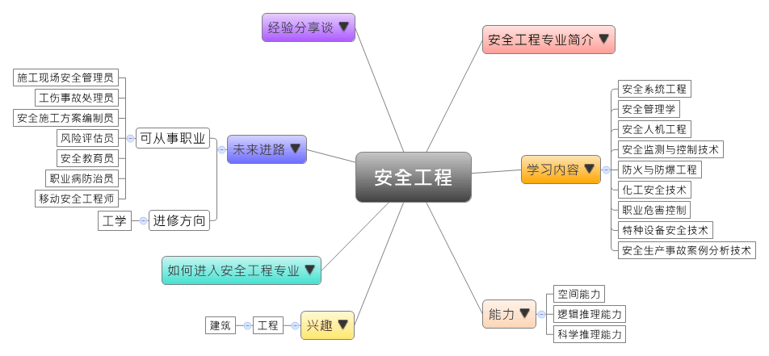

- 专业大观园
-

- 专业介绍
-
什么是安全工程？
安全工程是确保工程系统安全运作的工程科学。其主要目标是消除或降低风险，从设计到维修的阶段都将安全列为优先考虑。在职场上，由于我国经济正在快速发展与转型，安全是生产与管理中很重要的一环，所以现实中各种层级的安全工程专业人材需求相当大。在生活中，具备安全工程专长能提升自我安全意识，较能冷静面对溺水、火灾、车祸，或是其他突发事件的发生，并将灾情降到最低程度。
安全工程专业除了训练学生具备扎实的安全工程理论与知识，也通过安全生产事故的案例分析、各种安全技术的专业训练，让学生能从事安全设计与生产、安全环境监控、安全教育与培训、灾害防治，以及安全科学与研究等工作。

定期进行设备安全检查 观摩事故应急救援之演练
- 学习内容
-
哲本专业学生主要学习安全工程的基础理论与各种安全防护知识与技术。安全工程是一个实务应用性很强的专业，学生须接受可应用于交通运输、航空航天、工厂生产、矿山与地下工事等各种领域的灾害防治技术、通风规划与空气调节、安全系统研发、安全监控和管理等专业训练。
本专业学习方向通常分为三类：矿业工程类、力学类、系统科学类；其他学校也有开设安全心理学或安全法学等课程，为学生未来就业做好准备。安全工程专业主干课程有：工程力学、流体力学、工程热力学、可靠性理论、安全管理学、安全系统工程、安全人机工程学、安全心理学、安全生产法及安全标准、安全生产管理知识、职业健康管理体系、职业卫生学、工业通风及除尘、通风空调与净化、事故应急救援、职业危害控制、特种设备安全技术、安全信息管理、安全监测监控技术、安全生产事故案例分析技术……等。此外，学生须加选一门以上的专业实验课程，如：通风及火灾爆炸控制、机电工程设备安全技术、安全管理及其系统方法等课程实验选修。
本专业可以习得的知识与获得之能力、技能列点：第一，具备扎实安全科学与工程基础，以及实践、创新、管理的能力；第二，能运用安全科学与工程的理论和方法，分析和解决生产中的安全问题；第三，具有较高的计算机应用与外语水平能力。
- 能力
-
安全工程专业学生，需具备以下能力：
相关性向能力 说明 空间能力  具备安全架设机电线路的能力
具备安全架设机电线路的能力
具备规划与检视施工工程图的能力逻辑推理能力 了解安全工程中系统管理的原则
能分析工程流程与工安问题的关系科学推理能力 具备职业灾害处理技能
熟悉人机科技工程的原理与应用
- 兴趣
-
若你对下列活动或事物有高度兴趣，可考虑进入安全工程专业学习：
商业 经营管理 倾向参与具体与实用性的活动
喜欢依照步骤与要求进行正确操作
对于分析、解决活动过程中的安全问题感到兴趣
- 如何进入此专业
-
下面列举开设安全工程专业的211工程重点大学院校：
- 未来进路
-
可从事职业
安全工程专业的学生毕业后就业选择多元，可在各种大型施工企业中从事施工现场安全管理、安全教育培训、工伤事故处理、安全施工流程研拟，以及工安档案管理等工作；同时也可在厂矿或生产型企业中从事企业安全管理、教育培训与评价、工伤事故处理，以及职业病防治等工作；又或是在各安全评价机构中从事专业风险的评估；毕业生亦可进入政府或相关企事业单位中从事安全管理的工作。在工作职场上皆能发挥工业事故防治、安全工程应用等专长：
行业 职业 建筑业、制造业 施工现场安全管理员、现场安全教育员、工伤事故处理员、安全施工方案编制员、现场安全档案管理员、风险评估员 采矿业、专业技术服务业 安全教育员、安全评价员、工伤事故处理员、职业病防治员 软件和信息技术服务业 网络信息安全工程师、安全评价师、移动安全工程师 进修方向以下列举安全工程专业毕业生可以继续修读之学科门类、一级学科与硕士点：
学科门类 一级学科 硕士点 工学 安全科学与工程安全科学与工程、公共安全工程与管理、飞行技术与安全 信息与通信工程信息安全、信息網絡與安全 土木工程安全科学与减灾、防灾减灾工程及防护工程 水利工程工程安全与防护、水灾害与水安全 矿业工程安全技术与工程、矿山评价技术及工程 纺织科学与工程纺织消防与安全工程 交通运输工程交通运输安全与环境工程 船舶与海洋工程救助与打捞工程、舰船安全技术与工程、载运工具运用工程 航空宇航科学与技术航空航天安全工程、航空宇航系统安全与可靠性工程、航空器结构与适航技术、适航技术与管理、载运工具运用工程 核科学与技术核科学与技术、辐射防护及环境保护 林业工程森林防火 食品科学与工程v食品安全管理、食品安全检测与控制 工程（专业硕士）安全工程、工業工程 注：工程专业硕士报考资格 工程专业硕士报考资格
工程专业硕士报考资格1.大学本科毕业后，有3年以上工作经验
2.获得国家承认的高职高专毕业学历后，有5年以上工作经验
3.已获硕士学位或博士学位，有2年以上工作经验
- 经验分享谈
-
国家安全生产管理专家——吴宗之
吴宗之，人称“吴博士”，1963年生于安徽宿松。他学问渊博、幽默风趣，毕业后几十年，先后担任高级工程师、研究员、事故调查分析中心副主任、国家安全生产专家组专家与几所大学的兼任教授，一晃眼从年轻博士生转变为全国知名的专家。
吴博士的研究工作是从事重大事故预防控制、安全管理、风险评价、事故应急与事故调查分析。他对国家的贡献是系统性的建立了中国重大工业事故预防控制体系，以及提出重大危险源辨识控制理论，研究里的诸多预防技术措施，皆为政府采纳并也成为国家安全法规的标准要求，他同时亦是中国职业安全健康管理体系研究与应用的倡导者，并出版了第一部职业安全健康管理的培训教材。
同时，吴博士先后主持与参加了国家“八五”和“九五”科技攻关等科研课题，以技术负责人的身份，主持并完成了包含北京、上海等6个城市的重大危险普查监控试点工作，发表科研论文50馀篇，且出版囊括《重大危险源辨识与控制》、《工业危险辨识评价方法》、《重大事故应急救援系统及预案导论》……等学术著作。
吴博士认为近10多年的重大事故，随着经济发展越发频繁，造成许多不良的社会影响，因此，建立安全生产长效机制，取决于充分的安全科学技术。他亦建议尽快颁布实施如《安全生产法》等配套法规，建立健全的事故应急救援体系，并提高重大事故预防控制的技术水平。【资料来源：百度贴吧. 安全管理专家吴宗之[EB/OL].】